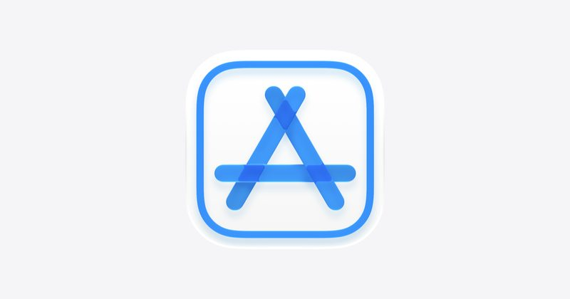

今日頭條
Siri AI 開放所有 App 串接 PLUS：Netflix 推 AI Discover 依心情推薦影片
本期重點：Apple 在 iOS 27.3 測試版開放所有開發者把 App 接上 Siri AI；Netflix 在電視 App 新增 AI Discover 分頁。另有 Google 校園 AI 管控、App Store 18 歲以上分級新規、ChatGPT 搜尋量與 AI 資料中心用電問題。
📋 2026/11/4（三） 共 7 則 Siri AI 開放所有開發者串接，第三方 App 也能被語音操作 Netflix 推出 AI Discover 分頁，選「心情主題」找片 Google 校園 AI 預設關閉，但關掉 AI 就連搜尋也不能用 App Store 新規：有交友或 AI 戀愛陪伴功能的 App 一律 18 歲以上 OpenAI：ChatGPT 搜尋量已達 Google 的 20% AI 推論新創 Fal 募資 13 億美元，估值翻倍到 160 億美元 等不到電網，AI 資料中心改用退役噴射引擎發電 圖：Apple 新上線 #1 Siri AI 開放所有開發者串接，第三方 App 也能被語音操作 Apple 11 月 3 日（美國時間）宣布，從 iOS 27.3、iPadOS 27.3、macOS 27.3 與 visionOS 27.3 測試版開始，任何開發者都能用 App Intents 把自己的 App 接上 Siri AI，讓 Siri 理解個人情境、畫面內容與自然語言，替使用者在 App 裡執行動作。Apple 同時推出「skills」，讓開發者教 Siri 把多個動作串成一次完成；行事曆、郵件、地圖、照片等 15 款自家 App 也開始加入新能力。
💡 跟你有什麼關係： 以後不必自己點進 App，用一句話就能請 Siri 查包裹、訂位或下單；Apple 也說 Siri AI 即將支援繁體中文，台灣用戶之後有機會直接用中文操作。
⚠️ 目前是開發者預覽版，Apple 表示會在幾個月後才正式推給一般用戶；繁體中文支援只寫「即將」，沒有公布日期。實際能用哪些 App，要看各家開發者是否串接。
📰 原始來源：Apple Developer（2026-11-03） ↗ 圖：Netflix 新上線 #2 Netflix 推出 AI Discover 分頁，選「心情主題」找片 Netflix 11 月 3 日宣布在電視 App 新增 AI Discover 分頁，第一個功能是先選主題，例如「輕鬆一點」「嚇我一下」「家庭電影夜」「短片快看」，再看對應推薦，並可一路細分或選「換一批」。每部片旁邊多了「調整推薦」按鈕，可以保留喜歡的推薦，或要求不要再推某部片。
💡 跟你有什麼關係： 不知道要看什麼、一直滑片單的人，可以直接從當下的心情或有多少時間開始挑；不想看的片也能主動排除，推薦會更貼近自己。
⚠️ 目前只在美國、以英文使用、支援的電視上對一小群會員開放，官方說未來幾週擴大；Netflix 稱這是「試驗廚房」，功能之後可能調整或取消，台灣開放時間未公布。
📰 原始來源：Netflix 官方新聞（2026-11-03） ↗ 圖：Google 政策 #3 Google 校園 AI 預設關閉，但關掉 AI 就連搜尋也不能用 Google 教育副總裁 Chris Phillips 11 月 3 日發文表示，Gemini、Gemini Notebook、Classroom 裡的 Gemini 與 Google 搜尋，對 K-12 學生帳號將預設完全關閉，要由學校管理員主動開啟。TechCrunch 引述 Phillips 對《紐約時報》的說法，因為搜尋和 AI 已深度整合，學校若完全限制 AI，學生也會無法使用 Google 搜尋。
💡 跟你有什麼關係： 學校可以自己決定學生能不能用 AI，但不能只關掉搜尋裡的 AI 摘要而保留一般搜尋；家長和老師之後可能要面對「要 AI 還是不要搜尋」的取捨。
⚠️ Google 說會在未來幾個月向學校說明細節後才實施，確切日期未公布；適用範圍是 Google 教育版的學生帳號，台灣學校是否同步未確認。同一篇也宣布 Guided Learning 在 Classroom 全球上線。
📰 原始來源：Google 官方部落格（2026-11-03） ↗ 
圖：Apple 政策 #4 App Store 新規：有交友或 AI 戀愛陪伴功能的 App 一律 18 歲以上 Apple 11 月 2 日（美國時間）通知開發者，App Store Connect 從 2026 年 11 月 16 日起新增兩項年齡分級說明：「分享位置」與「交友與感情」。凡是讓真人交友，或有會和使用者進行性或戀愛內容的虛擬伴侶，都屬於「交友與感情」，最低分級是 18 歲以上；所有 App 須在 2027 年 1 月 12 日前完成申報。
💡 跟你有什麼關係： Character.AI、Replika 這類 AI 陪伴 App 若有戀愛或性內容，之後在 App Store 會被標為成人分級，家長用年齡限制就能擋下；會分享即時位置的 App 也要明確標示。
⚠️ 「分享位置」在部分地區不一定影響分級；巴西有另外的分級規定。實際會有哪些 App 被改成 18 歲以上，要看開發者申報與 Apple 審核。
📰 原始來源：Apple Developer（2026-11-02） ↗ 圖：The Verge 數字 #5 OpenAI：ChatGPT 搜尋量已達 Google 的 20% The Verge 報導，OpenAI 的 ChatGPT 消費產品負責人 Adam Fry 在 11 月 2 日（美國時間）的記者會上表示，ChatGPT 的搜尋量已相當於 Google 的 20%。OpenAI 對「搜尋」的定義是使用者輸入的問題有觸發網路搜尋，單純解釋名詞或簡單教學不算。
💡 跟你有什麼關係： 越來越多人改用「問 ChatGPT」代替「Google 一下」；這也代表找資料時更常拿到 AI 整理的答案，重要資訊最好點開來源再確認。
⚠️ 數字是 OpenAI 自己公布，Fry 沒有說明 Google 搜尋量的數據來源；本則為二手報導，OpenAI 官方頁未找到同一數字。
📰 原始來源：The Verge（2026-11-03） ↗ 圖：TechCrunch／Getty Images 資金 #6 AI 推論新創 Fal 募資 13 億美元，估值翻倍到 160 億美元 TechCrunch 11 月 3 日引述 Bloomberg 報導，專門代管與執行 AI 影片、圖片、聲音模型的舊金山新創 Fal，完成由 Bessemer Venture Partners 領投、Nvidia 等參與的 13 億美元募資，估值 160 億美元，是 4 月 80 億美元的兩倍。Fal 同時公布 E 輪與 F 輪，合計募得 16.5 億美元。
💡 跟你有什麼關係： 很多 App 裡的 AI 修圖、生成影片背後，是 Fal 這類「代跑模型」的公司；資金湧入代表這類服務需求大增，但報導也指出它們的運算成本高、毛利偏薄。
⚠️ 估值數字來自 Bloomberg 報導，本則為二手報導；Fal 年化營收超過 8 億美元也是引述 Bloomberg。
📰 原始來源：TechCrunch（2026-11-03） ↗ 圖：TechCrunch 觀點 #7 等不到電網，AI 資料中心改用退役噴射引擎發電 TechCrunch 11 月 3 日引述《紐約時報》報導，部分 AI 資料中心因為排隊接電網要等好幾年，改用從退役飛機拆下、改裝燒天然氣的噴射引擎自己發電。報導提到 xAI 在密西西比裝了 8 台改裝渦輪供應孟菲斯的 Colossus 2，Crusoe 也在 4 月訂了 13 台；國際能源署估計北維吉尼亞接上 100 百萬瓦的電網約需 7 年。
💡 跟你有什麼關係： AI 服務越用越多，背後的電力缺口正在變成實際問題；這種臨時發電比較快上線，但效率較低、汙染較多，附近居民的空氣品質與電價都可能受影響。
⚠️ 本則為二手報導，原始報導為《紐約時報》；xAI 的機組數量是報導依州政府許可與衛星影像推估。
📰 原始來源：TechCrunch（2026-11-03） ↗ ✅ 2026/11/4（三） 可以做： 想讓小孩用 App Store 的家長，可以先檢查家人共享裡的年齡限制設定；Apple 新規上路後，有交友或戀愛陪伴功能的 App 都會被標成 18 歲以上。
🗂️ 過去 14 天